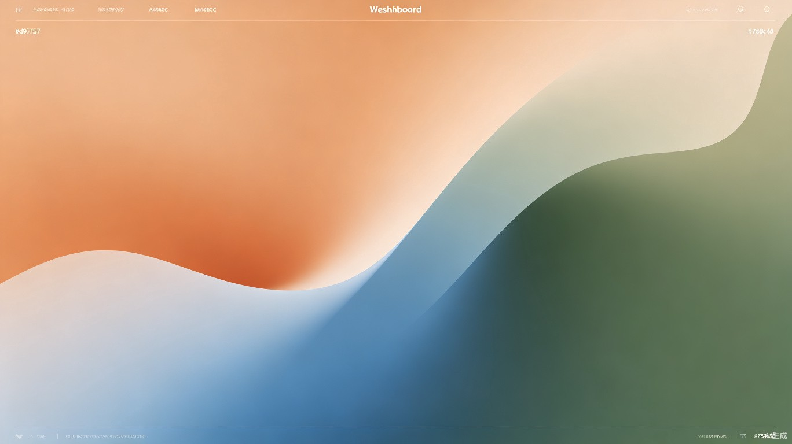

创作工坊
一键开启你的AI创作之旅
新建创作
选择创作模式，输入主题，让 AI 员工为你完成从剧本到成片的全流程。
创作模式
剧本创作
输入主题与风格，AI 自动生成结构化剧本、台词与场景描述。
进入 →
分镜生成
基于剧本自动拆分镜头，生成构图、景别与镜头运动建议。
进入 →
角色设计
一句话生成多角度角色立绘，支持风格锁定与表情包扩展。
进入 →
配音合成
为角色匹配音色，批量合成台词配音，支持情绪与语速调节。
进入 →
视频生成
将分镜与配音合成动态视频，自动添加转场与字幕。
进入 →
后期特效
一键添加粒子、光效与滤镜，提升画面质感与氛围感。
进入 →
最近创作

星际漫旅 · 第 4 集分镜
科幻题材，12 镜，正在生成第 5 镜
进行中
42%
古风仙侠 · 主角立绘
3 套造型，已完成 2 套
已完成
100%
都市情感 · 第 1 集剧本
现代都市爱情，初稿生成中
进行中
18%